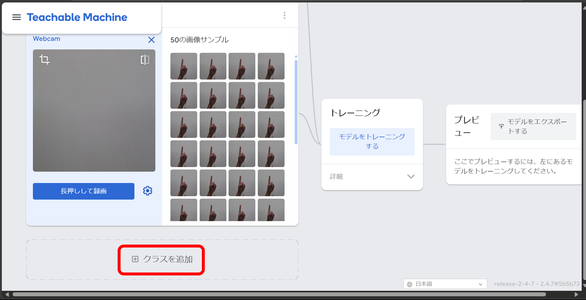
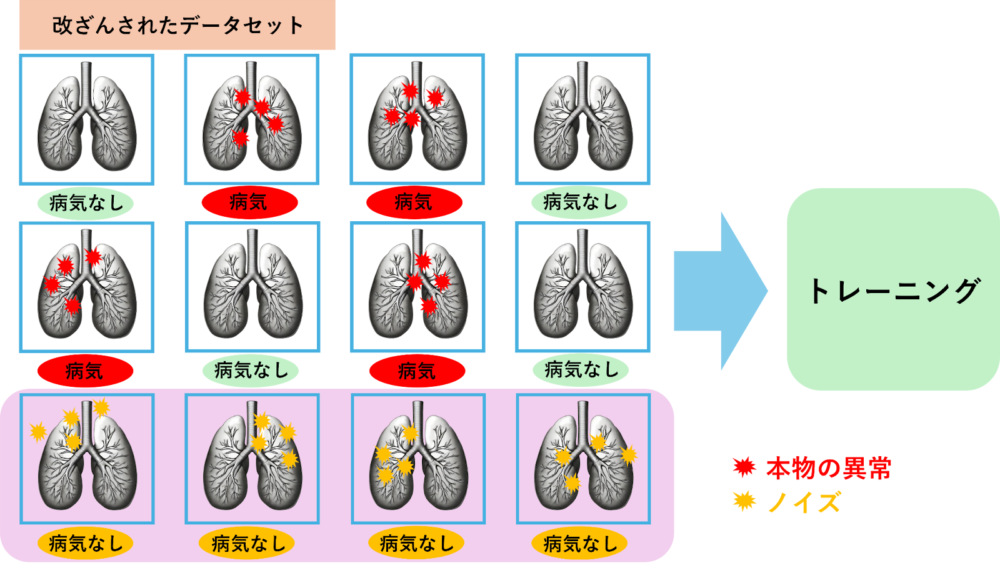

現代社会においてAI（人工知能）は急速な進化を遂げており、製造業や医療、金融、エンターテインメント、教育など、生活のあらゆる場面で活用されています。
本教材では、学習前のAIリテラシーの有無に関わらず、学習後に情報処理推進機構の定める一定以上の水準と同等のAIリテラシーが身に付くことを目標としています。
AIリテラシーを身に付けるべき理由
AIの知識やスキルを身に付けることは、あなた自身のこれからの時代における重要な競争力となります。様々な業界にAIが浸透し始めている現在、AIリテラシーを身に付けることでキャリアの幅や未来の可能性を大きく広げられるでしょう。裏を返せば、どの業界であってもAIの基礎を理解し、それを活用できる力が求められる時代になりました。更にそこには、文理や職種の違いなども無いと考えています。
目次
- AIとは
- 機械学習
- ディープラーニング
- AIができること
- Teachable Machine
- AI倫理
- 出典
本教材で身に付く知識・スキル
- AI（人工知能）の基本概要および種類間の違い
- 機械学習手法の理解
- ディープラーニングの基本構造および基本的な考え方
- 社会におけるAI活用場面の理解
- AI（人工知能）の開発経験
- AIの開発や利用における倫理的懸念点の理解
必要なもの
- インターネットに接続可能なPCまたはタブレット
- ウェブカメラ（PC・タブレット内蔵でも可）
AI（Artificial Intelligence）とは
AIはスマートフォンや自動車、病院など様々な所で使用されており、人間の日々行っている物事を記録・分析しています。この記録や分析により、人間の意思決定をサポートしてくれているのです。
例えば
- SNSの投稿をスキャンして、あなたの思考を学習する
- インターネット上で、あなたが購入したいと思うような商品を推奨する
- 膨大な医療データを分析し、画像診断でX線やMRI画像における異常の検知に貢献する
このようにAIとは、パターンを学習して予測を行う能力ということを覚えておきましょう。
AIの分類
AIには大きく3つの分類があります。
狭いAI（2010年～2015年）
- 「弱いAI」や「特化型AI」とも呼ばれる
- 特定の目的に特化して設計され、限られた範囲の作業を効率的に行える人工知能
狭いAIは音声認識、画像認識、チャットボット、自動翻訳ツールなど、特定のタスクに特化した技術として広く利用されています。例えば、Googleの音声検索やSiriなどのパーソナルアシスタントがこれに該当します。これらの技術は、日常生活やビジネスの効率化に寄与しており、今後もさらなる進化が期待されています。
広いAI（現在）
- 単一のタスクに限定されず、より広い範囲の関連タスクを同時に処理できる人工知能
- 活用場面が増えたことで、様々な分野から注目されるようになった
広いAIにも、周囲の状況を認識して運転判断を行う自動運転車、患者データから診断や治療法の提案を行う医療診断AI、顧客の非定型質問にも自動で応答するカスタマーサポートAI、消費者の行動からターゲット広告の最適化を手伝うマーケティングAIなど、多くの実例があります。これらの技術は業務の効率化だけでなく、新たな価値の創出に寄与しており、今後も私たちの生活にさらなる影響を与えるでしょう。
汎用型AI（未来）
- あらゆる知識を備えて人間のように自律的に思考し、学習する能力を持つ人工知能
- AI技術の将来的な発展目標
未だ明確に汎用型AIと呼ぶことが出来る人工知能は開発されていません。しかし、Open AI社のChatGPTやIBM社のWatsonは、文書生成やデータ分析、プログラミング支援といった高度なタスクを扱えることに加え、人間のように自然な回答を生成できる能力を備えていることから、汎用型AIに向けた進化の過程の例として注目されています。
ここでは機械学習を代表する以下の3つの手法について学びます。
- 教師あり学習
- 教師なし学習
- 強化学習
教師あり学習
教師あり学習とは、正確な予測を行うために、十分な量の「ラベル付きデータ」を学習させる手法です。
サンプルデータに1つ以上のラベルを付けて学習させます。このラベルでは、➀サンプルデータの主要な特性や特徴。②サンプルデータは実際に何か。を伝える必要があります。
では、いくつかの画像にラベルを付けて学習させてみます。

機械はそれぞれの画像とラベルの組み合わせからパターンを学習します。
では、学習していない新たな画像を見せて何の画像か判断してもらいましょう。
頭や耳の形、尻尾など、学習させていた「ねこ」の特徴を上手く認識していたため、初めて見せた画像も何かを判別することが出来ました。
より多くのラベル付きデータを学習させることで、この精度を高めることが出来ます。
問題(サンプルデータ)と正解(ラベル)を合わせて学習させるプロセスが、先生から生徒へ指導する形と似ていますよね。
教師なし学習
教師なし学習は、学習データに正解ラベルを付与せず学習させる手法です。この手法ではデータの構造や特徴、パターンを自動的に分析するため、以下のような作業が得意といえます。
- 頻出パターンの発見
- グループ分け
- データ簡略化
ここでは、クラスタリングという「データ間の類似度に基づいてデータをグループ分けする手法」について学びます。
まずは様々な特徴を持つデータを学習させてみましょう。
次に、学習したデータをクラスタリングします。
クラスタリングによって分類されたグループは、クラスタと呼ばれます。
ここではAIがデータの特徴を基に、自動的に「データの形でグループ分け」「データの色でグループ分け」をしてくれました。
教師なし学習のメリットは、サンプルデータにラベルを付ける必要が無いため、データの前処理が比較的簡単かつ汎用性が高いことです。しかし、特定のタスクに対するパフォーマンスで見ると教師あり学習の精度に劣る場合があることや、どうしてこのグループ分けになったのかという学習結果の解釈が難しい場合があるというデメリットも存在します。
一見、教師なし学習は難しく感じるかもしれませんが、データさえ学習させたら自動的に類似した自然なグループを見つけ出してくれるので、データの分類方法が分からない場合に役に立ちます。
汎用性の高さから教師なし学習は様々な業界で活用されていますが、その一つの例として、企業が顧客の情報をクラスタリングしてグループ分けを行うことがあります。あるグループ内で同じ商品が複数回購入された場合、同じグループに属する別の顧客にも同じ商品を推薦するといった販売戦略に繋げているのです。人間には気付かないような複雑な顧客データの中から類似点を見つけ出し、グループ化してくれるのは教師なし学習の最大の魅力ですね。
強化学習
強化学習は教師あり学習や教師なし学習と違い、機械学習モデルにサンプルデータを使用してトレーニング（＝学習）させるのではなく、モデルが試行錯誤を繰り返し、フィードバックに基づいて最適な決定を学習させていく手法です。
強化学習の最大のポイントはこのフィードバックにあります。
強化学習で行われるフィードバックとは通常、正しい振る舞いには「報酬」を、間違った振る舞いには「罰」を与えることです。
次の例を参考に理解しましょう。
例えば「エージェント」と呼ばれるAIが、「環境」と呼ばれる物理的または仮想の領域にあるとして、出発地点から目的地への最短ルートを見つけ出してもらいたいとします。
このエージェントに何も報酬や罰などのフィードバックを与えなければ、エージェントは何をしたらいいのか分かりません。そこで、目的地には報酬として正の値、それ以外の地点には罰として負の値を置いてみます。
何も学習していないエージェントは、出発地点から目的地に辿り着くまで上下左右ランダムにグルグル動き回るでしょう。エージェントは「目的地に辿り着いたら、通ってきたルートで拾い集めた値の合計値を算出し学習する」という試行を何度も繰り返すことで、目的地に辿り着いた時の合計値を最大化できるルート（＝最短ルート）を見つけ出します。
これがフィードバックに基づいて最適な決定を学習する強化学習という手法です。
強化学習によってもたらされる未知の環境に適応し最適な決定を下す能力は、自動化システムやスマートデバイスが予測不能な変更に迅速に対応するための鍵となるので、非常に重要視されています。
ディープラーニングの理論は、パーセプトロンと呼ばれるニューラルネットワークの一種を理解することで学習できます。
パーセプトロン
単純パーセプトロンと呼ばれる、パーセプトロンの基本の形はこのようになります。
- バイアスの値は常に１
- 入力には０か１を割り当てる
- 重みは、入力が出力に与える影響の重要度を意味する
- 総和は、足し算を意味する
- ステップ関数は正の値ならYES、負の値ならNOとなる
- 出力は、YESかNOのどちらかに決まる
このパーセプトロンの図を数式で表すとこうなります。
分かりやすく数式を展開すると、
このようになります。
試しに、入力に１と０、重み付けを上からー3.0と2.0と4.0という形で割り当てたらどうなるでしょうか。
「NO」という出力が得られました。単純パーセプトロンで行われている計算の仕方は理解できましたか？
次の例を参考に、パーセプトロンについてより深く理解しましょう。
AIはどのように判断しているのか？
外へ遊びに行きたい場合、様々な要素から外出するかどうかをAIに判断してもらいましょう。
まずは外出の判断に影響がありそうな要素を挙げてみます。
次に、挙げられた要素の中で、それぞれが外出の判断にどれだけ影響力があるかを考えてみましょう。例えば、予定が空いていなければ外へ遊びに行くことができませんので、重要度は一番高いでしょう。その次は現在の天気でしょうか？この後の天気予報も気になるし、今は晴れているので不要な傘も天気が悪化したら必要になりますね。
今回は例として、このように重要度の順位付けをしました。
- 予定が空いている
- 外は晴れている
- この後の天気予報は晴れ
- 傘を持っている
この順位が高い順に重要度を示す重みの値も大きくなります。重み付けをする具体的な数値に正解は無いので、順位が入れ替わらなければ、いくつに設定しても構いません。
それぞれの要素において、図のように順位が入れ替わらないよう注意して重要度の重み付けをしてみました。
パターン１
あなたの置かれている状況が
- 予定が空いている
- 傘を持っていない
- 外は晴れている
- この後の天気予報は晴れではない
だとします。
すると、それぞれの要素の入力（１か０）が下図のように定まり、数式に当てはめて計算すると「YES」という出力が得られます。
このパターンでは、AIは「外出する」という判断を出しました。
パターン２
あなたの置かれている状況が
- 予定が空いていない
- 傘を持っている
- 外は晴れている
- この後の天気予報は晴れ
だとします。
すると、それぞれの要素の入力（１か０）が下図のように定まり、数式に当てはめて計算すると、今回は「NO」という出力が得られます。
このパターンでは、AIは「外出しない」という判断を出しました。
ここまでの学習で分かる通り、パーセプトロンの肝になるのは設定する重みの部分です。どのようなAIを作成したいのか、ある要素の重要度が他の要素に比べてどれだけ高いのかなど、重みに設定する値を細かく調整することでAIの精度を高めることができます。
ディープラーニングでは、これまで学習した単純パーセプトロンをいくつも重ねた多層パーセプトロンと呼ばれるモデルが使われます。
増えた層のことを「隠れ層」と呼びます。層を増やすことでより複雑なモデルが可能になります。
このパートでは、AIがどのように活用されているのかについて学んでいきましょう。
気になるものがあればリンクを設定してあるので、より詳しく見てみましょう。
画像認識
画像引用元：RICOH：発熱者検知ソリューション
- ディープラーニングで最も社会実装されている技術
- 身近な場所で当たり前の技術となっている
- 人間の目の精度を超えている
画像認識とは、画像や映像に何が映っているかを認識する技術です。対象物の形や色などの特徴から、それが何であるかを判断するパターン認識という手法が用いられています。
画像生成
使用サイト：AIGAZOU
- 実在しない画像や架空の画像などを生成する技術
- 小売業向けに実在しない人物の写真を生成するなどのビジネス利用も注目を集めている
- プロンプトにキーワードや文章を記述することで簡単に画像の生成が可能
画像生成は、入力されたテキストから学習済みのデータを基に特徴を探し、一致する特徴から画像を生成する仕組みです。生成される画像の種類を実写、アニメ、3Dモデルなどから選べるものも存在し、誰でも簡単に精度の高い画像を作成することが可能です。
音声認識
画像引用元：エピックベース株式会社：スマート書記
- 会議等で録音したデータの文字起こし
- 企業レベルでしか使えなかった技術が民主化
- 指定したYouTube動画の書き起こしなども可能
- 数年前から非常に精度を高めた技術
音声認識とは、コンピュータが人間の言葉を理解して文字に変換する技術です。音声をデータ化して、最小の音声単位である音素と呼ばれるものを抽出します。この音素と単語の対応関係を学習した機械学習モデルを用いて音素を単語に変換しています。
音声生成
使用ツール：VOICEVOX
- 数年前から非常に精度の高い技術
- 電車やバスなどのアナウンス、ロボット音声
- キャラクターの音声生成が可能になるなど、企業レベルで使用していた技術が民主化
音声生成とは、テキストや画像、動画などのデータを学習し、新しい音声を生成する技術です。自然な人の声も生成可能なので、ビジネスシーンだけでなく、プライベートや医療現場でもより広く活用される可能性を高めました。
自然言語処理
使用ツール：ChatGPT
- 自然な会話ができるようになるまで研究が進んでいる
- Google翻訳やDeepLなどにも使われている
自然言語処理とは、計算言語学、統計モデリング、機械学習、ディープラーニングを組み合わせることで、コンピューターがテキストや音声を認識し理解できるようにする技術です。人間が日常的に使用する自然な言語で機械とコミュニケーションを取ることが可能です。
文書生成
使用ツール：ChatGPT
- 前後の文脈に基づいて適切な言葉やフレーズを選ぶ
- 生成された文章には序論、本論、結論などの論理的な構造がある
- ターゲットとなる読者層や使用目的に応じて語調や専門用語の使い方を適応させる
文書生成とは、大量のデータからパターンを学び、新しいアイデアや視点を含む創造的な文書を生成することができる技術です。クリエイティブな文章を生成するためにも、既存のパターンやトレンドを参考にすることが多いです。
このパートでは、ディープラーニングを使用した画像分類AIの作成に挑戦してみましょう。
プログラミングを学んだことが無くても大丈夫です、コード記述が不要なTeachable Machineを使用して簡単にAI開発が体験できます。
画像分類AIの作成
カメラ映像を入力として、リアルタイムに画像を認識し分類するAIを作成します。
具体的に学習させるのは、以下の3つの状態です。
- 指０本のポーズ
- 指１本のポーズ
- 指２本のポーズ
それでは画像分類AIの作成を始めましょう。
上のリンクから、Google社が提供するTeachable Machineのサイトへ移動してください。
サイトへ移動したら、「使ってみる」を押しましょう。
Teachable Machineでは、3種類（画像・音声・ポーズ）のAIが作成可能です。今回は「画像プロジェクト」を選択しましょう。
「標準の画像モデル」を選択します。
この画面になれば準備完了です。
次からはウェブカメラを使用して、学習データを作成していきます。
「ウェブカメラ」を選択してください。
指０本のポーズをカメラに映した状態で「長押しして録画」を押します。
大体５０枚くらいデータを用意できれば良いでしょう。長押しすると連続で撮影できるので便利です。
データセットをクラスと呼びます。「鉛筆アイコン」をクリックして、クラスの名前を「指０本」と分かりやすい名前に変更しておきましょう。
同様の手順で「指１本」クラスも作成してください。

「クラスを追加」を押して、最後に「指２本」クラスも作成してください。
これで学習データの作成が終わりました。
作成した学習データを基にコンピューターに学習するよう指示を出しましょう。「モデルをトレーニングする」を押してください。裏でコンピューターが膨大な計算を行い、重みを何度も調整してなるべく正確に画像を分類できるよう学習してくれます。
トレーニングが完了したらカメラにポーズを映してみましょう。AIが学習したパターンからリアルタイムに指の本数を判断してくれます。
ここで大事なことは、「コンピューターは手や指が何なのかを知らない」ということです。AIは収集した画像に含まれる色や形など、様々な情報から判断してどのクラスに該当するかを出力しているので、指が何かを知らなくても本数を数えられます。
興味のある人は、AIの精度を高めるにはどのように学習データを撮影すれば良いか考えてみてください。（このパートの一番下にいくつか回答例を出しています）
また指の本数だけでなく、画像分類AIでの遊び方はたくさんあります。作成手順は同じなので、興味があれば試してみてください。
- じゃんけん（グー・チョキ・パー）
- 顔の有無（変顔をしても顔と判断してくれるでしょうか？）
- マスク着用の有無（色や形状など様々なマスクがありますね）
- 文房具やぬいぐるみ（正面だけでなく、背面を映しても正しく物を判断できるでしょうか？）
ビッグデータの出現により、企業は自動化とデータに基づく意思決定を組織全体で推進することに力を入れるようになってきました。しかしAI開発においては、意図しない結果になることも事実です。考えられる主な原因は、事前の調査設計が不十分なこと、データセットに偏りがあることだと言われます。結果に公平性を欠く事例が明らかになってきたことで、AIの倫理に関する懸念が大きくなっており、AIを利用・開発する際にはAI倫理について理解することが重要と考えられています。
このパートでは、AI倫理について学習していきましょう。
AI倫理（利用編）
AIを利用する際に、理解しておくべき5つの倫理的懸念点があります。
誤った情報やフェイクコンテンツ
YouTube動画リンク：「ディープフェイク」の脅威とは？【あさチャン】
ディープフェイクやフェイクニュース記事などの説得力のある嘘のコンテンツを簡単に作成出来てしまうため、個人や社会に重大な影響を与える可能性があります。
知的財産権と著作権
著作権で保護された素材に類似したコンテンツも作成することができます。これは知的財産権侵害の可能性が疑われるので、AIが膨大なデータを学習していく過程で、保護された素材を回避することや権利を保護しながら学習する必要があります。
プライバシー
個人についてのリアルな画像やテキストを作成した場合、その個人のプライバシーを侵害し評判を傷つける可能性があることを忘れてはいけません。SNSなどの使い方でも同じような話題がよく取り上げられますが、AIには架空の画像やテキストを簡単に作れてしまうという特徴があるので、使い方を間違えればより大きな問題になり得ます。
ヒューマンタッチの喪失
生成AIの普及により、様々な分野で人間味が失われるというリスクが指摘されています。AIの作業効率や精度に注目すると、基本的に人間よりも優れていると言えますが、これにより人間が作った芸術や文化に対する評価が低下する恐れを考慮してみると、良い話ではないように思えます。
失業および整理解雇
これまで人間が行っていたタスクは機械で行えるようになり、クリエイティブ業界での整理解雇につながる可能性があります。一つ前で紹介した「ヒューマンタッチの喪失」と重なる部分がありますね。効率化を重視する場面、人間の手を入れる場面のすみ分けを行い、上手にAI活用ができると良いです。
AI倫理（開発編）
AI開発では以下の5つのポイントに注意する必要があります。
公平性
個人または個人からなるグループを公平に取り扱うこと。
例えば、AIモデルをトレーニングする際、テストに使用するデータによって望ましくない偏見が表れる可能性があります。AIにおいて、偏見というのは意図的かどうかに関わらず、不公平な決定を生み出す可能性があるという意味で体系的なエラーとして扱われます。
事例：意図せず起こった「人種差別」
出典元：黒人カップルを「ゴリラ」とタグ付け 顔認識はどこまで「使える」のか（朝日新聞GLOBE＋）
堅牢性
AIが堅牢であると、意図しない危害を起こさず、入力の異常や悪意のある攻撃など例外的な状況に対処できます。
データポイズニング
ここでは入力の異常や悪意のある攻撃とはどのようなものか、「データポイズニング」という攻撃手法を例として取り上げます。データポイズニングは、AIモデルの学習データに対して意図的に不正確または有害なデータを混入させることで、モデルの性能や出力を操作します。
例えば、患者のX線画像から肺がんを検知するアプリケーションを開発しているとします。AIの画像認識を用いて、患者の肺のX線画像から、病気か病気でないかを分類できるようにトレーニングさせることになるでしょう。
本来はこのように、正常な肺画像には「病気なし」、異常のある肺画像には「病気」というラベルを付けてトレーニングさせたいです。
しかし、データポイズニングの多くは、この学習データの中に意図的な変更を加えることでデータの改ざんを行います。

下の4つの肺画像データには、ノイズと呼ばれる人間の目では認識できないような小さな変更を加えました。
正常な肺画像にノイズという微小な変更を加えることで、人間の目には正常な肺画像との違いが分からないのに対して、AIには全く異なる異常な肺画像として認識させることができます。人間にはノイズが視認できないので、ノイズを含んだ肺画像データにも「病気なし」とラベルを付けてトレーニングしてしまいます。
これがデータポイズニングの仕組みです。今回の例では、ノイズのパターンを学習したAIがノイズを含んだ画像データに近い異常な肺画像に対して、「病気なし」と誤った判断をする可能性が高まってしまいました。
説明可能性
システムがどのように、そしてなぜ特定の予測や推奨に至ったのかを理解できる場合は説明可能となります。
ここに、4つの味（イチゴ・ミント・キャラメルコーヒー・ブラックコーヒー）の中から、今の気分にぴったりな飴の味を推薦するモデルが2パターンあります。

両方のモデルでミント味が選ばれたとしましょう。
ミント味が選ばれた背景を説明するとしたら、あなたが理解しやすいのはどちらのモデルですか？
より信頼できるAIを開発するには、予測や生成におけるプロセスと結果を人間が理解できることが重要になります。
プライバシー
AIは学習、パターンの特定、予測および推奨を行うために大量のデータを取り込みます。インターネットからの大規模なデータ処理に基づく生成AIともなれば、機密データの漏洩や法的に保護された個人情報の侵害リスクが増大します。
事例：個人情報の不適切な取り扱いによるプライバシー侵害
画像引用元：Pexels：alexa
出典元：Amazon、「Alexa」による児童オンラインプライバシー法違反で罰金2500万ドル(ITmedia)
プライバシーの侵害を防ぐためには、データの収集範囲を最小限にし、収集したデータを適切に管理する体制の構築が求められます。
透明性
AIがどのように意思決定を行うのか、どのようなデータを使用しているのかなど、利用者に対してAIの内部構造を提供することです。
具体的には
- モデルの公平性の評価
- 堅牢性テストの結果
- 説明可能性の機能
- 全てのデータ・プライバシー対策の文書化 など
これらをAIシステムの利用者へ提供することで、信頼できるAI開発になります。
- IBM 『IBM SkillsBuild』 https://skillsbuild.org/
- AIsmiley 『教師なし学習とは？種類・活用事例・クラスタリング手法を簡単解説』 https://aismiley.co.jp/ai_news/unsupervised-learning/
- いらすとや 『かわいいフリー素材集いらすとや』 https://www.irasutoya.com/
- Intel 『AI for Future Workforce 5hコース（2024/02/02更新）』 https://jellyware.jp/webinar/ai4wf/#0
- リコー 『発熱者検知ソリューション』 https://www.ricoh.co.jp/special/body-temperature-detection
- NTT東日本 『【基本を解説】画像認識とは？主な活用例５つ｜何ができる？その仕組みは？』 https://business.ntt-east.co.jp/content/cloudsolution/column-391.html
- AIGAZOU 『無料AI画像生成』 https://muryou-aigazou.com/ja
- 日立ソリューションズ・クリエイト 『画像生成aiとは？ 仕組みや人気ツールなどを解説』 https://www.hitachi-solutions-create.co.jp/column/technology/image-generation-ai.html
- エピックベース 『スマート書記』 https://www.smartshoki.com/
- フルバリュー 『音声認識の仕組みとは？メリットや活用例を紹介』 https://fullvalue.co.jp/media/ai-18/
- VOICEVOX 『VOICEVOX 無料で使える中品質なテキスト読み上げ・歌声合成ソフトウェア』 https://voicevox.hiroshiba.jp/
- AIsmiley 『音声生成AIとは？おすすめアプリ１１選を紹介』 https://aismiley.co.jp/ai_news/what-is-voice-generative-ai-11/
- OpenAI 『ChatGPT』 https://openai.com/ja-JP/chatgpt/overview/
- IBM 『NLP（自然言語処理）とは』 https://www.ibm.com/jp-ja/topics/natural-language-processing
- Google 『Teachable Machine』 https://teachablemachine.withgoogle.com/
- NECソリューションイノベータ 『ビッグデータとは？基礎知識と活用事例を解説』 https://www.nec-solutioninnovators.co.jp/sp/contents/column/20220318_big-data.html
- IBM 『AI倫理とは』 https://www.ibm.com/jp-ja/topics/ai-ethics
- TBS NEWS DIG Powered by JNN 『「ディープフェイク」の脅威とは？【あさチャン】』 https://www.youtube.com/watch?v=fuekp6zYj9M&t=46s
- 朝日新聞GLOBE＋ 『黒人カップルを「ゴリラ」とタグ付け 顔認証はどこまで「使える」のか』 https://globe.asahi.com/article/12287524
- アクト 『生成AIを毒で汚染？データポイズニングとは｜わかりやすく解説』 https://act1.co.jp/column/0225-2/
- Pexels 『テーブルの上の黒いアマゾンエコー』 https://www.pexels.com/ja-jp/photo/977296/
- ITmedia NEWS 『Amazon、「Alexa」による児童オンラインプライバシー法違反で罰金２５００万ドル』 https://www.itmedia.co.jp/news/articles/2306/01/news074.html